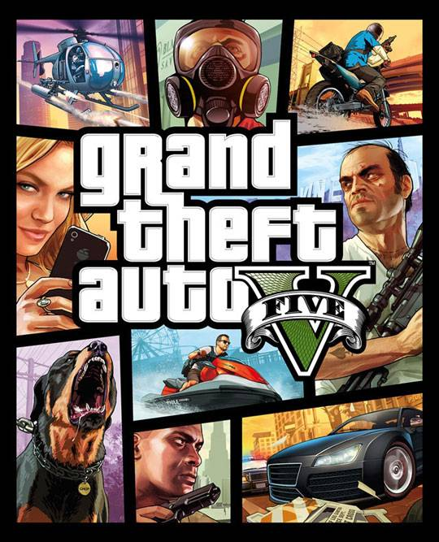

GTA5 is PC, Console online game.

GTA5는 록스타 노스가 개발하고 록스타 게임스가 배급하는, 그랜드 테프트 오토 시리즈 중 12번째 작품이다. GTA5는 2013년 봄에 출시될 예정이었으나, 같은 해 9월 17일로 연기되어 플레이스테이션 3와 엑스박스 360로 출시된 오픈월드 액션 어드벤처 비디오 게임이다. 이후 그래픽 및 성능 향상, 1인칭 시점, 기타 컨텐츠를 포함한 리마스터판이 플레이스테이션 4, 엑스박스 원 버전은 2014년 11월 18일[7]에, 마이크로소프트 윈도우 버전은 두 차례 연기되어 2015년 4월 14일에 발매되었다. 시리즈 최초로 공식 자막 한글화가 이루어졌다.[8]